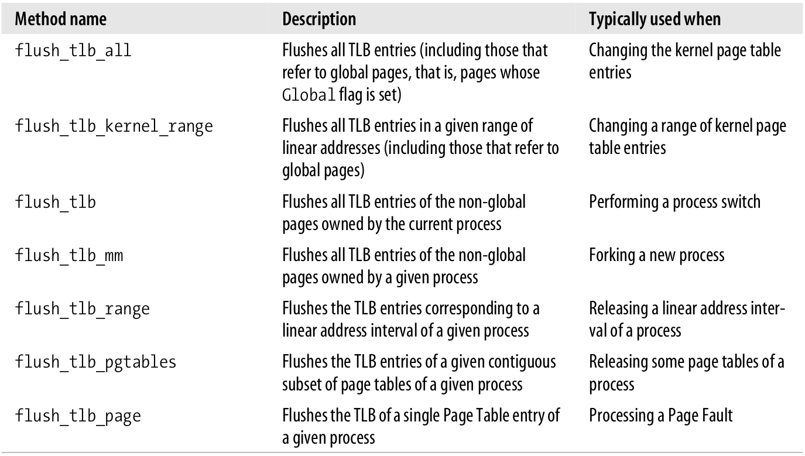

Linux内存管理
Table of Contents
本文分三大部分来介绍Linux内存管理, 即是:
- 内存寻址
- 内存管理
- 进程地址空间
主要针对的平台是80x86.
1 内存寻址
内存寻址主要解决的问题是: CPU给出一个虚拟地址, 如何将这个虚拟地址转化为RAM的物理地址来索引其中的内容.
1.1 内存地址
在80x86下要区分三种地址:
逻辑地址
在机器指令中出现的地址, 指明一个操作数或其它指令的地址. 每个逻辑地址都由一个segment和offest组成, 偏移(offset)指明了实际的地址离段的开始处有多远.
线性地址
一个32-bit的无符号整数可以索引4GB的地址空间, 也就是4294967296个内存单元. 线性地址通常由十六进制表示, 也就是从0x00000000到0xffffffff.
物理地址
用来在内存芯片中索引某个内存单元, 其实就是一些会从微处理器发送到内存总线上的电信号. 物理地址由32或36比特的无符号整数来代表.
MMU会将逻辑地址转换为物理地址, 其流程如下:

Figure 1: 逻辑地址如何被MMU转化成物理地址
在多处理器中, 所有的CPU共享内存, 这意味着RAM芯片或许会被多个独立的芯片并发访问, 在RAM芯片上进行读写是序列化的, 在总线和芯片之间有一个内存仲裁器. 它的作用是, 如果内存芯片是空闲的, 则授予本次访问, 而如果内存芯片正在服务另一个读/写请求, 则拒绝来到的请求. 即使是单处理器, 也需要内存仲裁器. 因为DMA控制器可能会和CPU并发访问内存, 而引起冲突. 但是从编程的角度来说, 仲裁器对他们来说都是不可见的, 是由硬件电路管理的.
1.2 硬件上的分段
从80286开始, Intel微处理器就分两种方式的地址翻译, 一是实模式, 二是保护模式, 后文的内容主要是针对保护模式开启时的地址翻译. 实模式主要是为了与较旧的处理器兼容以及引导操作系统从实模式过渡到保护模式.
1.2.1 段选择子与段寄存器
一个逻辑地址由两部分组成: 段标识符与偏移, 偏移用来指明在段内的相对地址. 段标识符由16比特组成, 叫做段选择子, 而offset是32比特的域. 关于段选择子后文还要介绍, 而下图是段选择子的结构:

Figure 2: 段选择子
为了能够快速的取得段选择子, 在处理器内部有段寄存器用来存放段选择子, 这些寄存器被叫做cs, ss, ds, es, fs以及gs. 尽管只有较少的六个, 程序可以把它们存到内存上, 从而重用这些寄存器, 待用完后又可以从内存里恢复它们的值.
其中有三个段寄存器是有特别的目的:
cs
代码段寄存器, 指向一个包含有程序指令的段.
ss
栈段寄存器, 指向一个包含当前栈的段.
ds
数据段寄存器, 指向一个包含有全局或静态数据的段.
其余三个寄存器就是通用目的了, 可以指向任意的数据段.
cs寄存器还有一个重要的功能, 它有两个bit域用来表明CPU的当前权限级(Current Privilege Level,CPL). 0表示最高的权限级, 而3表示最低的权限级, Linux仅使用0和3, 即所谓的内核模式和用户模式.
1.2.2 段描述符
每个段由八字节的段描述符来表示，这个段描述符描述了段的特性。段描述符存在全局描述符表或局部描述符表中。
全局描述符表（GDT，Global Descriptor Table）通常只有一个，但局部描述符表（LDT，Local Descriptor Table）可能会有多个。GDT在内存里的地址和占有的大小通常是存在gdtr控制寄存器里，而当前正在使用的LDT的地址与大小存放在ldtr控制寄存器里。
下图展示了段描述符的格式：

Figure 3: 段描述符格式
下面这个表解释了各个字段的意义：
| 字段名 | 描述 |
|---|---|
| Base | 所描述段的第一字节的线性地址。 |
| G | 粒度标志：如果是0，段的大小以字节为单位，如果为1则是4096字节的倍数。 |
| Limit | 存放段的最后字节的偏移，也即是指明了段的长度，如果G是0，大小介于1B-1MB，否则是4KB-4GB。 |
| S | 系统标志：如果是0，代表这是一个系统段，存放有关键数据结构比如局部描述符表，否则，则是一个正常的代码或数据段。 |
| Type | 指明段的类型以及访问权限 |
| DPL | Descriptor Privilege Level，用来限制对段的访问。指明了访问段的最小权限级别。当段的DPL是0时，这时仅有CPL是0，即CPU处于Kernel Mode时才可访问，然而DPL为3时，就可被任意级别的CPL访问。 |
| P | 段存在标志。为0时，代表段存在于内存中。Linux总是把这个flag设为1，代表它从未将段swap out到磁盘。 |
| D or B | 依据段是包含代码还是数据，代码段为D，数据段为B。 |
| AVL | 或许被操作系统使用，Linux不用。 |
由于有几种类型段，也有对应的几种段描述符。下面列出了几种在Linux中广泛使用的段描述符类型：
代码段描述符
表示段描述符指向的是一个代码段，这种类型的段描述符可以存放在全局描述符表GDT中，也可以存放在局部描述符表LDT中。描述符的S标志被设置为1，表明这是一个非系统段。
数据段描述符
表示段描述符指向的是一个数据段，这种类型的段描述符可以存放在全局描述符表GDT中，也可以存放在局部描述符表LDT中。描述符的S标志被设置为1，表明这是一个非系统段。栈段在实现上是通过普通的数据段来做到的。
任务状态段描述符（TSSD）
表明这个段描述符指向一个任务状态段，这个段是用来存放处理器（进程的）寄存器的内容。仅在GDT中存放，根据对应的进程是否正在CPU上运行，其对应的Type域有值11或9。它的S标志自然是0，代表这是一个系统段。
局部描述符表描述符（LDTD）
表示段描述符指向一个包含有LDT的段，仅在GDT中存放，Type域的值为2。S标志为0，代表所指段为 系统段。后文会介绍在80x86下，如何决定一个段描述符是存放在GDT中还是LDT中。
1.2.3 快速访问段描述符
前文已述，逻辑地址由16-bit的段选择子和32-bit的偏移组成，段寄存器用来存放段选择子。
为了加速逻辑地址到线性地址的翻译，在80x86下，对于每个可编程的段寄存器，都有一个不可编程的（程序员不可见）寄存器，这个不可编程的寄存器都存放有由对应的段寄存器里的段选择子所指明的段描述符。每当段选择子加载到段寄存器时，其对应的段描述符也会由内存加载到对应的不可编程寄存器里。这时，访问相应段里的逻辑地址时就可以不用访问存在内存中的GDT或LDT。处理器可以直接从CPU寄存器里获得相应段选择子的段描述符。只有当段寄存器的内容改变时，才有必要访问GDT或LDT。如下图：

Figure 4: 段选择子与段描述符
任何段选择子都包含如下表的三个域：
| 域名 | 描述 |
|---|---|
| 索引 | 指明是在GDT或LDT中的哪个条目 |
| TI | Table Indictor：指明描述符是包含在GDT（TI=0）还是LDT（TI=1）中 |
| RPL | Requestor Privilege Level：当段选择子被加载到cs寄存器时，RPL就成了CPU的Current Privilege Level。 |
由于段描述符是8字节长，那么一个段描述符在GDT或LDT中的相对位置是将13-bit的索引值乘以8后得到。比如，GDT存在0x00020000位置（在gdtr寄存器中）而由段选择子指明的索引是2，那么对应的段描述符的地址就是0x00020000 + （2X8），即是0x00020010。
GDT的第一个条目通常设为0。这可以保证逻辑地址为NULL时，可以被当成非法，因此触发处理器异常。 在GDT中能存放最大数目的段选择子是8191个（2**13 - 1）。
1.2.4 分段单元
下图详细的展示了一个逻辑地址如何被转换为一个线性地址。分段单元执行下面的操作：

Figure 5: 将逻辑地址转换为线性地址
- 通过检查段选择子中的TI域来确定哪一个描述符表存有段描述符。这个域会指明描述符要么存在GDT（这种情况下，分段单元通过gdtr寄存器来获得GDT表的基地址）中要么存在激活的LDT（这种情况下，分段单元通过ldtr寄存器来获得LDT表的基地址）中。
- 从段选择子中的index域来获得段描述符的地址。index域的值会乘以8（一个段描述符的大小），并且会加到gdtr或ldtr寄存器。
- 将逻辑地址的偏移和段描述符的Base域相加，由此而得到线性地址。
要注意下的是，由于每个段寄存器都有一个与之关联的不可编程寄存器存有段描述符，所以头两步只有段寄存器发生改变时才会被执行。
1.3 Linux中的分段
分段在80x86微处理器中得到支持，这鼓励程序员把他们的应用划分为逻辑相关的部分，比如子程序或者、全局以及局部数据区域。然而，Linux却很少使用分段。实际上，分段和分页在某种程度上是冗余的，因为两者都可以划分进程的物理地址空间：分段可以分配给每个进程不同的线性地址空间，而分页可以将相同的线性地址空间映射到不同的物理地址空间。Linux更加偏爱分页而不是分段，因为：
- 当所有进程都使用相同的段寄存器时，也就是它们共享相同的线性地址空间，内存管理就会变得更加简单。
- Linux的一个设计目的就是可移植性，尽量移植到更多的架构。而RISC对于分段支持的不是很好。
所有在User Mode下运行的进程，使用user code segment和user data segment来寻址指令和 数据。类似的，所有在Kernel Mode下运行的进程，使用kernel code segment和kernel data segment 来寻址指令和数据。下面的表描述了对于这四个段描述符的各个域：
| Segment | Base | G | Limit | S | Type | DPL | D/B | P |
|---|---|---|---|---|---|---|---|---|
| user code | 0x00000000 | 1 | 0xfffff | 1 | 10 | 3 | 1 | 1 |
| user data | 0x00000000 | 1 | 0xfffff | 1 | 2 | 3 | 1 | 1 |
| kernel code | 0x00000000 | 1 | 0xfffff | 1 | 10 | 0 | 1 | 1 |
| kernel data | 0x00000000 | 1 | 0xfffff | 1 | 2 | 0 | 1 | 1 |
对应的段描述符由四个宏定义，分别是__USER_CS、__USER_DS、__KERNEL_CS以及__KERNEL_DS。为了寻址内核代码段，内核就加载由__KERNEL_CS宏决定的值到cs段寄存器。
注意这些段的线性地址都是从0开始到2**32-1，这意味着所有的进程，不论是在User Mode还是Kernel Mode下都可能使用相同的逻辑地址。
另外在Linux下，逻辑地址和线性地址是重合的，也就是逻辑地址的offset域就对应着线性地址。
如前所述，CPU的当前权限级表明了处理器是在User模式还是Kernel模式下，并且是由存在cs寄存器中段选择子的RPL域指明。CPL如果改变，对应的某些段寄存器就可能会更新，比如，CPL是3（User Mode） 的话，ds寄存器就必须包含user data segment的段选择子。当CPL是0的时候，ds寄存器就必须包含kernel data segment的段选择子。
对于ss寄存器也有类似的情形，当CPL为3时，必须引用用户模式的栈，为0就是内核模式的栈了。当从用户模式切换到内核模式时，Linux总是确保ss寄存器包含内核数据段的段选择子。
1.3.1 Linux GDT
在单处理器中只有一个GDT，然而在多处理器情况时，每个CPU都会对应一个GDT。所有的GDT都会存在cpu_gdt_table数组里，而GDT的地址和大小则存在cpu_gdt_descr数组里。
GDT的布局如下图示意：

Figure 6: 全局描述符表
每一个GDT都包含18个段描述符以及14个null，unused，以及reserved（保留的）条目。插入unused条目的段描述符主要就是为了访问段描述符在硬件cache的32字节处对齐。
每个GDT中的18个段描述符指向下面这些段：
- 代码和数据段，内核和用户态各两个。
- 一个任务状态段（TSS），系统中每个处理器的TSS都不同。对应于一个TSS的线性地址空间是对应于内核数据段的线性地址空间的一个小子集。任务状态段依次存储在init_tss数组中。对于第n个处理器，其TSS描述符的Base域指向init_tss数组的第n个元素。G标志被清0，Limit域被设置成0xeb，因为TSS段有236字节长。Type域为9或11，DPL为0，即是User Mode下的进程不允许访问TSS段。
- 一个默认的LDT局部描述符，通常由所有进程共享。
- 三个线程局部存储段：这三个段的机制是，允许多线程应用可以使用最多三个段用来存储线程私有的数据。set_thread_area和get_thread_area系统调用分别用来为正在执行的进程创建和释放TLS段。
- 三个APM（Advanced Power Management）段：由BIOS利用的段。
- 五个由BIOS使用的Plug and Play(PnP)段。
- 一个由内核使用的用来处理double fault异常的特殊TSS段。
1.3.2 Linux LDTs
很多Linux用户模式的应用不会使用局部描述符表, 默认的局部描述符表存在default_ldt数组里. 它共包括五个条目, 但是仅有其中的两个是被内核有效使用的: 针对iBCS可执行文件的调用门以及针对Solaris/x86可执行文件的调用门. 调用门是由80x86微处理器提供的一种机制, 在调用预先定义好的函数时, 可以改变CPU的权限级别.
然而在某些情况下, 进程需要去设置它自己的LDT. 这对于那些需要去执行分段导向的Microsoft程序的应用(比如wine)来说是很有用的, modify_ldt这个系统调用可以使程序达到这个目的.
1.4 硬件上的分页
分页单元将线性地址转换为物理地址. 分页单元的一个关键任务就是检查访问的类型和访问权限, 如果内存访问是无效的, 就会生成一个Page Fault的异常.
分页单元会将RAM想象成分成了许多固定长度的页框. 每个页框就包含一个页, 也就是页框的长度就是页的长度. 页框是内存的组成部分, 因此它是一片存储空间. 页和页框是有区别的, 前者表示一块数据, 它可以存放在任何物理页框上, 甚至是磁盘上都可以.
将线性地址映射到物理地址的数据结构叫页表. 它们存储在主存里, 并且在使能分页单元之前, 必须被内核进行正确的初始化.
从80386开始, 所有的80x86处理器都支持分页, 通过设置cr0寄存器的PG标志位来使能分页单元. 而当PG=0时, 线性地址被直接解释为物理地址.
1.4.1 常规分页
从80386开始, Intel处理器的分页单元可以处理4KB的页
32-bit的线性地址可以被划分为三个部分:
- Directory 最高10比特位.
- Table 中间10比特.
- Offset 最低12比特.
线性地址的翻译分两步来完成, 每一步都基于一种类型的翻译表. 第一级的翻译表叫做页目录, 第二级的叫做页表(特指第二级翻译表).
两级页表的方案主要是为了减少管理进程地址空间的页表所占用的空间. 如果只用简单的一级页表, 那么每个进程就需要2**20个条目(如果每个条目四字节的话, 统共就是4MB RAM空间)存放在页表里, 这还只是一个进程.
每一个活跃的进程都必须需要一个Page Directory. 然而却没有必要一次性为一个进程分配所有的页, 仅在进程需要的时候再分配效率更高.
正在使用的Page Directory的物理地址是存在一个叫cr3的控制寄存器里. 在线性地址里的Directory域确定出是在Page Directory表里的哪个条目, 而这个条目又指向Page Table. 线性地址里的Table域, 确定是Page Table里的哪个条目, 这个条目又指向包含数据的页框, 而最后的offset域, 又确定了在页框里的偏移, 因为这个偏移有12-bit长, 所以每页都有4096的字节数据.
如下的图:

Figure 7: 80x86处理器的分页
目录与表域都是十字节长, 所以页目录和页表都能存储最大1024个条目. 也就是一个页目录最大可以寻址1024x1024x4096=2**32个内存空间, 也就是32-bit的地址.
页表和页目录域具有相似的结构, 每个条目包括下面这些域:
Present 标志
如果被设置, 代表被引用的页面被保存在内存中. 如果这个标志是0, 代表这个页面不被包含在内存中, 这样的情况下, 其它bit位可以由操作系统自行使用, 用作其它目的. 如果一个页表条目的Present标志被清除但是需要地址翻译, 分页单元就会将这个线性地址存在叫cr2的控制寄存器里, 然后生成14号异常: 即是Page Fault异常.
Field 包含一个物理页框地址的最高20-bit
因为每个页框有4-KB的大小容量, 所以它的物理地址就必须是4096的倍数, 所以物理地址的低12-bit总是等于0. 如果field指向的是页目录, 则页框包含的是页表数据. 如果field指向的是页表, 则页框包含的是一个页面的数据.
Accessed 标志
每当分页单元访问了对应页框的数据后, 就会设置这个bit. 当在选择哪个页面需要被swap out的时候, 操作系统或许会用到这个bit. 分页单元自身不会reset这个bit, 这是由操作系统做的.
Dirty 标志
仅用于页表条目. 每当在页框上进行写操作时, 这个标志就会被设置. 如同access标志, dirty标志也可被操作系统用来选择哪些页面被swap out. 分页单元自身不会reset这个bit, 这是由操作系统做的.
Read/Write 标志
页或页表的访问权限(Read/Write).
User/Supervisor 标志
表明了访问这个页面需要的权限级.
PCD和PWT 标志
控制硬件cache处理页或页表的方式.
Page Size 标志
仅对Page Directory条目有效. 如果被设置, Page Directory条目指向2MB-4MB的页帧.
Global 标志
仅对Page Table有效. 在Pentium Pro中引入, 用来阻止常用的页面从TLB cache中被清除, 使用这个功能需要把cr4寄存器的Page Global Enable(PGE)标志清除.
1.4.2 扩展分页
从Pentium开始, 80x86微处理器引入了扩展分页(Extended Paging), 它允许页帧成为4MB大小, 而不是原先的4KB, 如下图:

Figure 8: 80x86扩展分页
扩展分页用来将大块的连续线性地址翻译成对应的物理地址. 这种情况下, 内核可以没有中间层次的页 表, 因此节省了一部分内存以及保留TLB条目.
前面提到过, 通过设置Page Directory条目的Page Size标志来使能扩展分页功能. 在这种情况下, 分页单元将32-bit的线性地址划分为两个域:
Directory
最高的10比特.
Offset
剩下的22比特.
除了以下两点, 扩展分页的页目录条目和常规分页是一样的:
- Page Size标志必须设置.
- 物理地址的最高10-bit才有效, 因为每个物理地址都被对齐在4MB的边界, 所以最低的22个比特都是0.
扩展分页和常规分页并存, 通过设置cr4的PSE标志来使能扩展分页功能.
1.4.3 硬件保护机制
分页单元采用的保护机制不同于分段单元。对于一个段来说，80x86的处理器允许四个可能的权限级， 而对分页来说仅有两个权限级，也就是User/Supervisor标志。当这个flag被设置为0时，仅当CPL小于3时页面才能被访问，也就是处于内核模式。而当这个标志为1时，页面就总是能被访问。
另外，不同于段的三个访问权限（读，写以及执行），页仅有两个访问权限：读与写。
1.4.4 64-bit架构下的分页
如前所述，32bit的处理器常用的就是两级页表。然而这对于64-bit架构就不是那么适合了，下面的例子解释了原因：
假设标准页面大小是４KB大小，Offset域就是12-bit了，还剩下52比特要在页表和目录之间分配。现在假设仅使用48bit，那么就是余下的48-12=36比特要在页表和目录之间分配，如果均分36比特的话，那么每个进程的页目录和页表都会有2^18次方个条目，也就是超过了256000个条目。
出于这个原因，对于64比特的处理器，都会增加一级页表。具体多少级页表依赖于处理器。下面的表总结了常见的64比特架构的分页级数：

Figure 9: 各64-bit架构页表分级情况
1.4.5 硬件缓存
今天的微处理器时钟频率都达到了几个G，而动态RAM（DRAM）的访问可以花费达到几百个时钟周期。这意味着，当CPU想要从RAM取回指令或者存储结果回RAM时，可能会被牵扯暂停很久。
而硬件cache的出现就是为了缓解CPU和RAM之间的速度差异。它们基于局部性原理，这个原理对于程序和数据结构来说都是成立的。因为程序会把相近的数据都放在相邻的地址。所以在80x86下引进了新的单元叫缓存行。
缓存被划分为很多的子行。在极端的情况下，缓存可以是直接映射（direct-mapped），就是说，对于内存中的一行数据，在缓存中的固定某个位置被缓存（注意这没有说对于缓存中的一个位置只能存一个内存位置的数据）。另一个极端情况是：全相关，就是说，对于内存中的任意一行数据可以存储在缓存中的任意位置。但是大多数情况下，缓存都是N路组相关，在这种情况下，对于内存中的任意行，在缓存中以N行为单位中的任意一行来进行存储。举个例子，对于2路组相联，内存中的某一行可以存在缓存中的两个不同地方。
如下图所示：

Figure 10: 处理器硬件Cache
在分页单元和DRAM之间插入了缓存单元。它包括硬件cache内存以及缓存控制器。cache memory存储了实际的内存行。缓存控制器存储了一组条目，一个条目对应缓存中的一行。每个条目包括一个tag和几个flag用来描述cache line的状态。缓存控制器使用tag中的某些bit位来识别当前映射到缓存行中的内存位置。内存物理地址的bit位通常化分为三部分：较高位的某些bit位对应tag，中间的一些对应索引，而低位的对应一个缓存行中的偏移。
当缓存命中时，根据访问类型的不同，缓存控制器的行为也不同。对于读操作，控制器从缓存行中选择数据并且转送给CPU里的寄存器，不经过RAM所以CPU节约了时间。而对于写操作，控制器可以实现两种基本策略，一是write-through，二是write-back。对于write-through，控制器会向RAM和cache line都写入。对于write-back，提供更加高的性能，只有cache line会被更新而RAM的内容未改变。当然，RAM的内容最终会被更新。当CPU执行一个flush指令或硬件的FLUSH信号发生时（这通常意味着一个cache miss），缓存控制器就会将cache line写回到RAM。
当cache miss发生时，cache line就会写入到内存，如果可能会将必要的行从RAM中取到cache entry。
对于多处理器系统，每个处理器都有自己的硬件缓存，因此需要额外的电路来同步cache的内容。如下图所示：

Figure 11: 双处理器的缓存
每个CPU都有它自己的局部硬件缓存，这样更新就比较费时了。每当CPU修改硬件缓存时，都必须检查相同的数据是否也在其它的CPU缓存中，如果在的话也要通知其它CPU去更新到最新的值。这个行为叫做缓存监听。幸运的是，这些都是由硬件自动完成的，内核并不关心。
缓存技术在快速的发展，比如，Pentium一代仅包含一个片上缓存叫做L1-cache。而较新的处理器包含更大、更慢的片上缓存叫做L2-cache，L3-cache。不同缓存级别间的一致性由硬件层维护，Linux忽略这些硬件细节并认为只有一块缓存。
cr0寄存器的CD标志可以用来使能或禁用缓存电路。而NW标志，指明了是使用write-through或write-back策略。
Pentium缓存的另一个特点是，可以让操作系统来设置每个页帧（page frame）的缓存管理策略．为了实现这个目的，每个页目录和页表条目都包括两个flag，PCD（Page Cache Disable），这个标志指明了在访问页帧里的数据时是否需要开启缓存．而PWT（Page Write-Through），则指明了在往页帧里写数据时采用write-back或write-through策略．Linux清除了PCD和PWT标志，也就是说，缓存对于所有页帧都是使能的，对于写操作则都是采用write-back策略．
1.4.6 TLB
除了通用目的的硬件缓存，80x86处理器还包括另一个缓存叫做Translation Lookaside Buffers（TLB）用来加速线性地址翻译．当一个线性地址第一次使用时，物理地址是通过访问RAM里的Page Table来获得的，这样比较慢．于是将物理地址存在了TLB里，当下次需要访问一样的线性地址就可以快些．
在多处理器系统中，每个CPU都有它自己的TLB，叫做CPU的局部TLB．与硬件Cache相反的是，对应的TLB条目不需要同步，因为进程在一个CPU上运行时可能将相同的线性地址和不同的物理地址关联起来．
当cr3寄存器改变时，硬件自动无效局部TLB所有的条目，因为新的page tables开始使用了，而TLB却依旧指向旧的数据．
1.5 Linux中的分页
对于32-bit和64-bit，Linux都采用一套公共的分页模型．如前所提到的，两级页表对于32bit架构已经 够用了，但是对于64bit架构却需要更多级别的页表，四级页表的组成如下：
- 全局页目录（PGD）
- 上级页目录（PUD）
- 中级页目录（PMD）
- 页表
全局页目录包含的是上级页目录表的地址，而上级页目录表包含的是中级页目录表的地址，中级页目录表包含的又是页表的地址．每个页表条目指向的就是Page Frame的地址了．因此线性地址可以被划分为5部分．注意下图没有包含各级有多少bit数，因为各个部分到底有多少bit数目是依架构而定的．

Figure 12: Linux分页模型
对于没有开启PAE（Physical Address Extension）的32bit架构，两级页目录就足够了．通过在PUD和PMD部分设置0，Linux就可以达到消除这两级页表的目的了．
Linux对于进程的处理严重依赖于分页．分页机制的存在使得下面的目的可以达到：
- 给每个进程分配不同的物理地址空间，可以有效的防止寻址相关的错误．
- 对页面（数据的集合）和页框（主存中的物理地址）作出区分，这就允许相同的页面可以存到页框里，随后存到磁盘上，最后重新加载到内存时可以到不同的页框里去．
每个进程都有它自己的PGD和页表．当进程切换发生时，Linux会将之前运行进程的cr3寄存器存到它的进程描述符里，并且将下个要运行进程的进程描述符里的cr3值加载到cr3寄存器．
下面会介绍一些函数和宏，主要是提供给内核用来找出物理地址以及管理各级表．
1.5.1 线性地址的字段
下面的一些宏简化了页表的处理：
PAGE_SHIFT
指明了OFFSET域的长度．在80x86上，就是12．所以80x86上一个页面的大小就是2**12次方也即4096个字节．宏PAGE_SIZE用来返回一个页面的大小．最后宏PAGE_MASK用来屏蔽所有Offset域的比特值．
PMD_SHIFT
线性地址的Offset和Table域的合计比特数目，换言之，就是一个Page Middle Directory条目能够映射的大小（以2的对数计算）．宏PMD_SIZE可以返回这个大小．而PMD_MASK宏可以屏蔽所有Offset和Table域的比特．
PUD_SHIFT
确定一个PUD（Page Upper Directory）条目能映射多大的空间，PUD_SIZE返回这个大小．类似的有PUD_MASK．
PGDIR_SHIFT
确定一个PGD条目能映射多大空间．同样的有PGDIR_SIZE和PGDIR_MASK．
PTRS_PER_PTE，PTRS_PER_PMD，PTRS_PER_PUD以及PTRS_PER_PGD
分别计算了Page Table，Page Middle Directory，Page Upper Directory以及Page Global Directory能包含的条目数．
1.5.2 页表处理
pte_t，pmd_t，pud_t以及pgd_t分别描述了一个Page Table，Page Middle Directory，Page Upper Directory以及Page Global Directory条目的格式．而pgprot_t数据类型是用来表示一个条目的保护标志．
__pte，__pmd，__pud，__pgd以及__pgprot可以把相应的C类型转换为对应的类型．而另外五个类型转换的函数，pte_val，pmd_val，pud_val，pgd_val以及pgprot_val又可以执行相反的操作把相应的类型转换为C的基本类型．
内核也提供一些宏来修改或读取页表条目：
- pte_none，pmd_none，pud_none以及pgd_none返回1，如果对应的值为0．否则，就返回0.
- pte_clear，pmd_clear，pud_clear以及pgd_clear清除对应页表的条目．因此可以禁止进程使用由对应页表条目对应的线性地址．而ptep_get_and_clear函数清除页表条目并且返回之前的值．
- set_pte，set_pmd，set_pud以及set_pgd，将给定的值写到指定的页表条目中．
- pte_same(a,b) 如果两个页表条目a和b指向同一个页面，并且权限也相同，就返回1，否则返回0．
- pmd_large(e) 如果PMD条目e指向一个大页，比如2MB或4MB，就返回1，否则是0.
- pmd_bad 该宏以PMD条目作为参数．返回1如果这个PMD条目指向一个坏的页表，也就是至少一个如下的情形：
- 页面不在主存中，也就是Present标志被清掉．
- 页面只被允许读访问．
- Accessed或Dirty被清掉．
pte_bad宏是不存在的，因为页表条目是引用一个页面的，对于一个页面来说，它不在内存里，不可写，甚至不可访问都是合法的，
当pte条目的Present标志或者是Page Size的标志为1时，pte_present宏返回1，否则就是返回0．
下面列出一些函数用来查询pte的当前flag.
| 函数名 | 描述 |
| pte_user() | 读取User/Supervisor标志 |
| pte_read() | 读取Read/Write标志 |
| pte_dirty() | 读取Dirty标志 |
| pte_young() | 读取Accessed标志 |
下表列出一些函数，来设置pte页表条目里的标志：
| 函数名 | 描述 |
| mk_pte_huge() | 设置一个pte条目的Page Size以及Present标志 |
| pte_wrprotect() | 清除Read/Write标志 |
| pte_mkwrite() | 设置Read/Write标志 |
| pte_mkclean() | 清除Dirty标志 |
| pte_mkdirty | 设置上Dirty标志 |
| pte_mkold() | 清除Accessed标志 |
| pte_mkyoung（） | 设置上Accessed标志 |
| pte_modify(p,v) | 将页表条目p的访问权限设置为v |
| ptep_set_wrprotect() | 与pte_wrprotect（）类似，但是操作在一个指针上，这个指针指向一个pte条目 |
| ptep_mkdirty() | 类似pte_mkdirty()，但是作用于指针上，指向pte页表项 |
下面的宏则是用于将页面地址和一组保护标志组合起来形成一个页表条目，或者是执行相逆的操作，从一个页表条目中提取页地址．
| 函数名 | 描述 |
| pgd_index(addr) | 返回一个在PGD表中的索引，这个索引对应了线性地址addr |
| pgd_offset(mm, addr) | 接收内存描述符mm的地址以及线性地址addr作为参数，该宏会生成PGD里一个条目的线性地址，这个线性地址对应着addr，而PGD本身通过内存描述符里的指针找到． |
| pgd_offset_k(addr) | 与pgd_offset类似，不过产生的是内核空间的 |
| pgd_page(pgd) | 返回一个页框的页描述符地址，这个页框包含有PUD，它被pgd引用． |
| pud_offset(pgd, addr) | 接收参数为一个指向PGD的指针pgd，以及一个线性地址．该宏会生成pud里一个条目的线性地址，这个条目对应着addr． |
| pud_page(pud) | 返回PMD的线性地址，它被pud引用． |
| pmd_index(addr) | 返回一个在PMD中条目的索引，它可以映射到addr. |
| pmd_offset(pud, addr) | 接收一个指针参数pud，它指向一个PUD条目，另一个参数是线性地址addr．该宏会产生一个指向PMD里一个条目的地址，这个条目对应着addr． |
| pmd_page(pmd) | 产生一个页表的页描述符地址，这个页表由pmd条目指向． |
| mk_pte(p,prot) | 接受一个页描述符p的地址，以及访问权限prot，并且构建对应的pte． |
| pte_index(addr) | 产生一个索引，它对应addr在页表中的索引． |
| pte_offset_kernel(dir, addr) | 产生一个页表的线性地址，它对应着线性地址addr，并且由PMD参数dir映射． |
| pte_offset_map(dir, addr) | 接收两个参数，一个是指向PMD条目的指针，以及一个线性地址addr，然后产生一个在Page Table里的条目的线性地址，对应着线性地址addr． |
| pte_page(x) | 返回一个page描述符的地址，这个page由Page Table条目x引用 |
最后要介绍的一组函数用来创建或删除页表条目．
处理Page Table时可能会有些麻烦，因为对应的pte可能不存在，这样就需要创建pte．在这种情况下，需要分配新的页帧，填入0，并且添加条目．
下面描述这样的页面分配函数，它们都是针对80x86而言的．
| 函数名 | 描述 |
| pgd_alloc(mm) | 分配一个新的PGD，参数mm在80x86上忽略了． |
| pgd_free(pgd) | 释放pgd |
| pud_alloc(mm, pgd, addr) | 在二或三级的分页系统里，该函数啥也不做，仅是返回PGD条目的线性地址 |
| pud_free(x) | 在二或三级页表的系统里，该宏是空操作 |
| pmd_alloc(mm, pud, addr) | 对于三级页表系统，可以通过这个函数对线性地址addr分配一个新的PMD |
| pte_alloc_map(mm, pmd, addr) | 接收PMD条目地址作为参数以及一个线性地址addr，返回一个Page Table条目的地址，它对应于addr． |
| pte_alloc_kernel(mm, pmd, addr) | 主要用于内核页表． |
| pte_free(pte) | 释放pte关联的页表 |
| pte_free_kernel(pte) | 等价于pte_free，但是用于内核页表． |
1.5.3 物理内存分布
在内核初始化阶段，必须建立物理地址映射，它会指明对于物理内存的一些范围，哪些是可由内核使用的，哪些出于一些原因，内核不能使用，这些原因包括，该物理地址范围映射到了硬件设备或者是因为对应的物理页帧上包括有BIOS的数据．
内核认为下面的物理页面是保留的：
- 不可提供的物理地址范围．
- 包含有内核代码和数据的地址范围．
保留页面帧不能被动态的赋予值，也不能换出到磁盘．
1.5.4 内核页表
内核包含一组页表供给它自己使用，也被叫做主内核页表目录．对于这个页表的初始化，分为两个阶段，在内核镜像文件刚加载入内存时，CPU实际还是运行在实模式，分页并没有开启．
在第一阶段，内核创建一个有限的地址空间，包括内核的代码以及数据段，初始的页表，以及128KB的动态数据结构．这个最小的地址空间，仅刚好够将kernel安装在RAM里并且初始化好核心的数据结构．
在第二阶段，内核利用提供的存在的RAM将页表设置正确．
1.5.5 硬件Cache和TLB的处理
本节最后打算介绍下内核如何使用硬件缓存．在现代计算机架构中硬件缓存和TLB（TranslationLookaside Buffers）对于提升性能扮演着至关重要的角色．内核开发者会使用几个技术手段来降低cache和TLB miss．
硬件cache是以行为单位索引的，宏L1_CACHE_BYTES指明了一个cache行的大小．通常是32，或128这样的值．
为了优化Cache的命中率，内核通常采取以下决定：
- 数据结构里频繁访问的成员放置在较低的偏移处，这样它们就能缓存在同一个Cache行．
- 当需要分配许多数据结构时，内核将这些数据结构均匀的分散在内存里这样就能以均匀的方式使用缓存行．
缓存同步在80x86上是自动执行的，因此对于这种处理器Linux内核不会执行任何硬件缓存刷新操作．但是，Linux内核提供缓存刷新的接口，这主要是针对没有自动同步的处理器．
而对于TLB缓存，处理器却不能自动同步，因为决定线性地址和物理地址的映射在什么时候不再有效是由内核而不是硬件决定的．
根据页表改变的类型，Linux提供几个页表刷新函数，如下图：

Figure 13: 架构独立的TLB无效函数
尽管通用的Linux内核提供了许多TLB的方法，每个微处理器提供的TLB无效汇编指令却是有限的．x86处理器在给cr3加载新值的时候自动刷新非全局页面的TLB条目．
架构独立的TLB无效函数可以比较容易的扩展到多处理器系统．在一个CPU上运行的函数可以给另外的CPU发送IPI中断，使得它们去执行TLB无效函数．